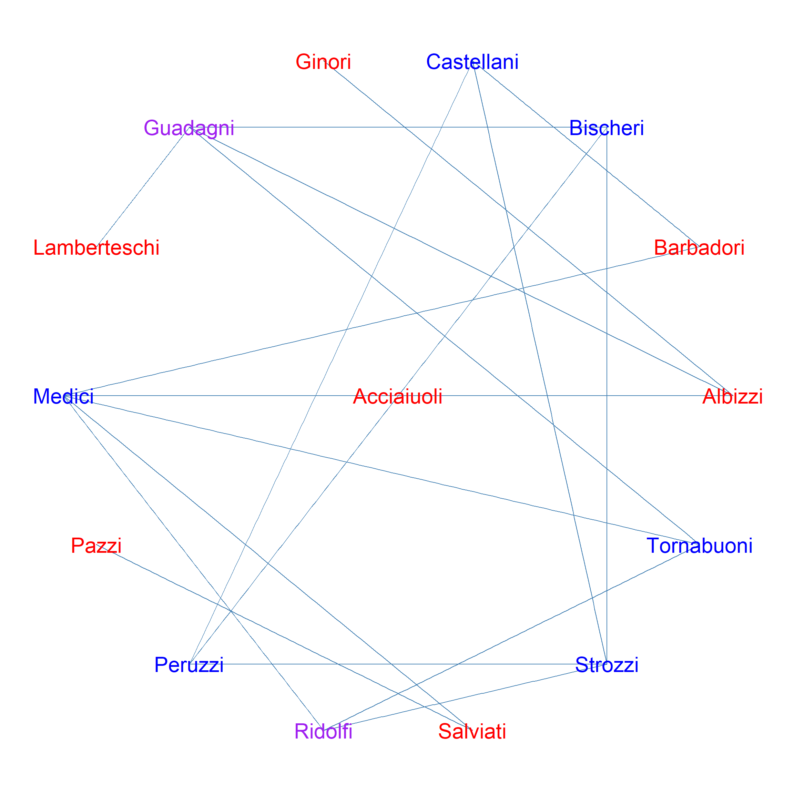

Jilbert’s Distinction Centrality
According to Jilbert (2024), the Distinction Centrality of a node is a function of the status of each focal node and the degree of status independence of its alters.
It is given by the difference between \(i\)’s own status and the average status of \(i\)’s neighbor in the node deleted subgraph that excludes \(i\):
\[ D_i = S_i(G) - \frac{\sum_{j \in N(i)} S_j(G - i)}{N} \]
Where \(S_i(G)\) is the (normalized to have maximum 1.0) eigenvector centrality of node \(i\) computed in the full graph \(G\), \(N(i)\) is the set of \(i\)’s neighbors, and \(S_j(G -i)\) is the eigenvector centrality of node \(j\) in the node deleted subgraph of \(G\) that excludes \(i\). The Distinction of a node thus increases with its own status and decreases to the extent that others would gain status if that node was not around.
g1 <- make_star(7, mode = "undirected") # star graph
g2 <- g1 + edge(2,3)
g2 <- g2 + edge(2,4)
g2 <- g2 + edge(3,4)
g2 <- g2 + edge(5,6)
g2 <- g2 + edge(5,7)
g2 <- g2 + edge(6,7) # structural fold
g3 <- g1 + edge(2,4)
g3 <- g3 + edge(3,4)
g3 <- g3 + edge(5,6)
g3 <- g3 + edge(5,7) # intra-connected clusters
g4 <- g3 + edge(2,7) # inter-connected clusters
| Node | Distinction | Status | Constraint |
|---|---|---|---|
| 1 | 1.000 | 1.000 | 0 |
| 2 | -0.592 | 0.408 | 1 |
| 3 | -0.592 | 0.408 | 1 |
| 4 | -0.592 | 0.408 | 1 |
| 5 | -0.592 | 0.408 | 1 |
| 6 | -0.592 | 0.408 | 1 |
| 7 | -0.592 | 0.408 | 1 |

| Node | Distinction | Status | Constraint |
|---|---|---|---|
| 1 | 0.00 | 1.000 | 1.000 |
| 2 | -0.02 | 0.608 | 0.628 |
| 3 | -0.02 | 0.608 | 0.628 |
| 4 | -0.02 | 0.608 | 0.628 |
| 5 | -0.02 | 0.608 | 0.628 |
| 6 | -0.02 | 0.608 | 0.628 |
| 7 | -0.02 | 0.608 | 0.628 |

| Node | Distinction | Status | Constraint |
|---|---|---|---|
| 1 | 0.195 | 1.000 | 0.805 |
| 2 | -0.257 | 0.500 | 0.757 |
| 3 | -0.257 | 0.500 | 0.757 |
| 4 | 0.048 | 0.618 | 0.570 |
| 5 | 0.048 | 0.618 | 0.570 |
| 6 | -0.257 | 0.500 | 0.757 |
| 7 | -0.257 | 0.500 | 0.757 |

| Node | Distinction | Status | Constraint |
|---|---|---|---|
| 1 | 0.251 | 1.000 | 0.749 |
| 2 | -0.047 | 0.654 | 0.701 |
| 3 | -0.299 | 0.465 | 0.765 |
| 4 | -0.025 | 0.612 | 0.637 |
| 5 | -0.025 | 0.612 | 0.637 |
| 6 | -0.299 | 0.465 | 0.765 |
| 7 | -0.047 | 0.654 | 0.701 |

| Node | Distinction | Status | Constraint |
|---|---|---|---|
| 1 | 0.213 | 1 | 0.787 |
| 2 | 0.213 | 1 | 0.787 |
| 3 | 0.213 | 1 | 0.787 |
| 4 | 0.213 | 1 | 0.787 |
| 5 | 0.213 | 1 | 0.787 |
| 6 | 0.213 | 1 | 0.787 |
| 7 | 0.213 | 1 | 0.787 |

| Node | Distinction | Status | Constraint |
|---|---|---|---|
| 1 | -0.182 | 0.639 | 0.821 |
| 2 | 0.125 | 0.785 | 0.660 |
| 3 | 0.035 | 0.868 | 0.833 |
| 4 | 0.035 | 0.868 | 0.833 |
| 5 | -0.009 | 0.874 | 0.882 |
| 6 | 0.220 | 1.000 | 0.780 |
| 7 | 0.069 | 0.812 | 0.743 |

| Node | Distinction | Status | Constraint |
|---|---|---|---|
| 1 | 0.504 | 0.952 | 0.448 |
| 2 | 0.377 | 0.712 | 0.336 |
| 3 | 0.454 | 0.850 | 0.396 |
| 4 | 0.118 | 0.566 | 0.448 |
| 5 | -0.201 | 0.203 | 0.405 |
| 6 | -0.094 | 0.213 | 0.307 |
| 7 | -0.094 | 0.213 | 0.307 |
| 8 | -0.150 | 0.458 | 0.608 |
| 9 | -0.192 | 0.609 | 0.802 |
| 10 | -0.644 | 0.275 | 0.919 |
| 11 | -0.201 | 0.203 | 0.405 |
| 12 | -0.776 | 0.142 | 0.918 |
| 13 | -0.470 | 0.226 | 0.695 |
| 14 | -0.096 | 0.607 | 0.702 |
| 15 | -0.596 | 0.272 | 0.868 |
| 16 | -0.596 | 0.272 | 0.868 |
| 17 | -0.137 | 0.063 | 0.200 |
| 18 | -0.512 | 0.247 | 0.760 |
| 19 | -0.596 | 0.272 | 0.868 |
| 20 | -0.463 | 0.396 | 0.859 |
| 21 | -0.596 | 0.272 | 0.868 |
| 22 | -0.512 | 0.247 | 0.760 |
| 23 | -0.596 | 0.272 | 0.868 |
| 24 | -0.044 | 0.402 | 0.446 |
| 25 | -0.166 | 0.153 | 0.319 |
| 26 | -0.172 | 0.159 | 0.331 |
| 27 | -0.457 | 0.202 | 0.659 |
| 28 | -0.197 | 0.357 | 0.554 |
| 29 | -0.407 | 0.351 | 0.758 |
| 30 | -0.158 | 0.361 | 0.519 |
| 31 | -0.251 | 0.468 | 0.719 |
| 32 | -0.018 | 0.512 | 0.529 |
| 33 | 0.569 | 0.827 | 0.258 |
| 34 | 0.825 | 1.000 | 0.175 |
set.seed(1234)
iso <- which(degree(flo_marriage) == 0)
g <- delete_vertices(flo_marriage, iso)
plot.graph(g, "star", ts = 8)
| Node | Distinction | Status | Constraint |
|---|---|---|---|
| Acciaiuoli | -0.693 | 0.307 | 1.000 |
| Albizzi | -0.217 | 0.567 | 0.784 |
| Barbadori | -0.283 | 0.492 | 0.775 |
| Bischeri | 0.274 | 0.657 | 0.383 |
| Castellani | 0.230 | 0.602 | 0.372 |
| Ginori | -0.340 | 0.174 | 0.515 |
| Guadagni | 0.047 | 0.672 | 0.624 |
| Lamberteschi | -0.390 | 0.206 | 0.597 |
| Medici | 0.455 | 1.000 | 0.545 |
| Pazzi | -0.204 | 0.104 | 0.308 |
| Peruzzi | 0.306 | 0.641 | 0.335 |
| Ridolfi | -0.045 | 0.794 | 0.839 |
| Salviati | -0.655 | 0.339 | 0.994 |
| Strozzi | 0.543 | 0.827 | 0.284 |
| Tornabuoni | 0.211 | 0.757 | 0.546 |
p <- seq(0.1, 0.9, 0.01)
r <- rep(0, length(p))
for (i in 1:length(p)) {
set.seed(123)
g <- sample_smallworld(dim = 1, 15, 3, p[i])
d <- distinction(g)$u
b <- betweenness(g)
r[i] <- cor(d, b)
}
dat <- data.frame(p, r)
ggscatter(data = dat, "p", "r", add = "loess") 
Jilbert’s Distinction Equivalence